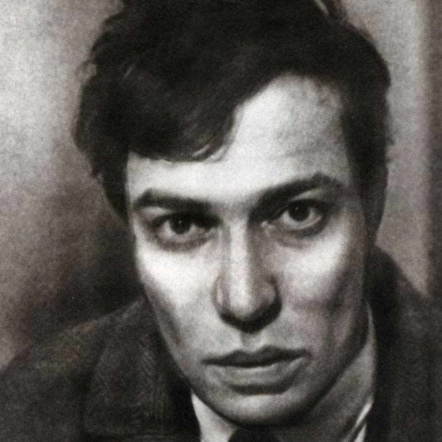
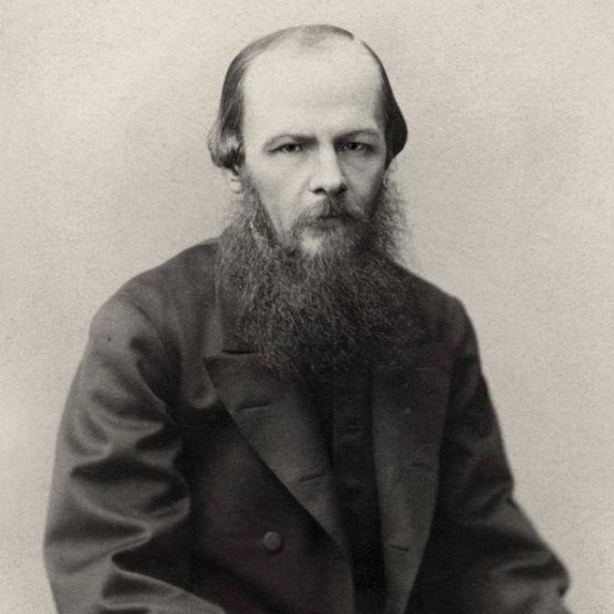
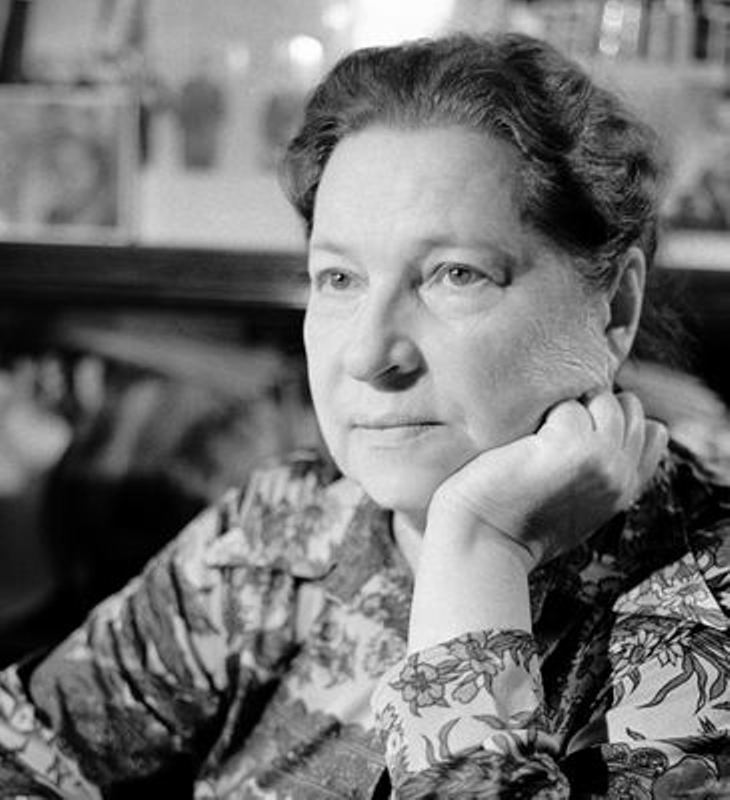
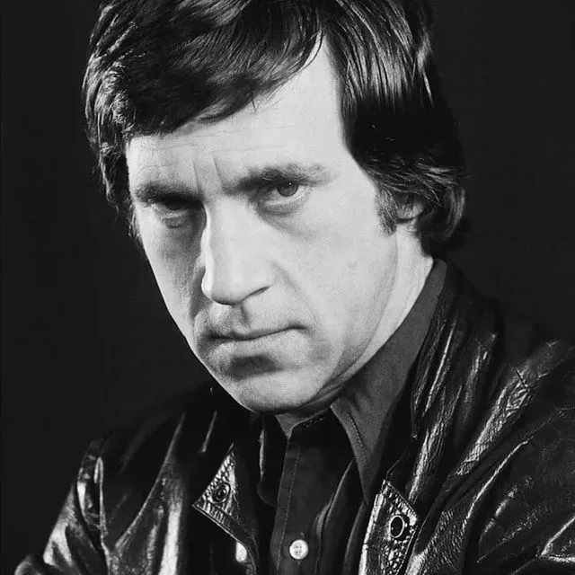
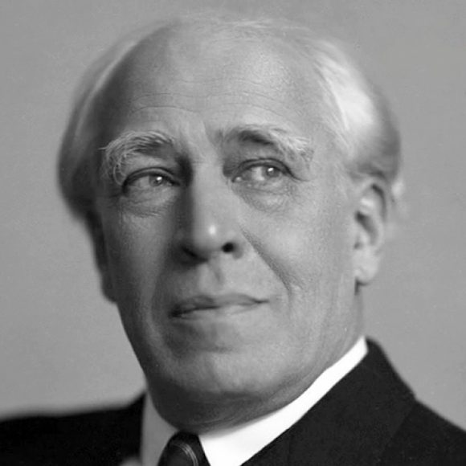
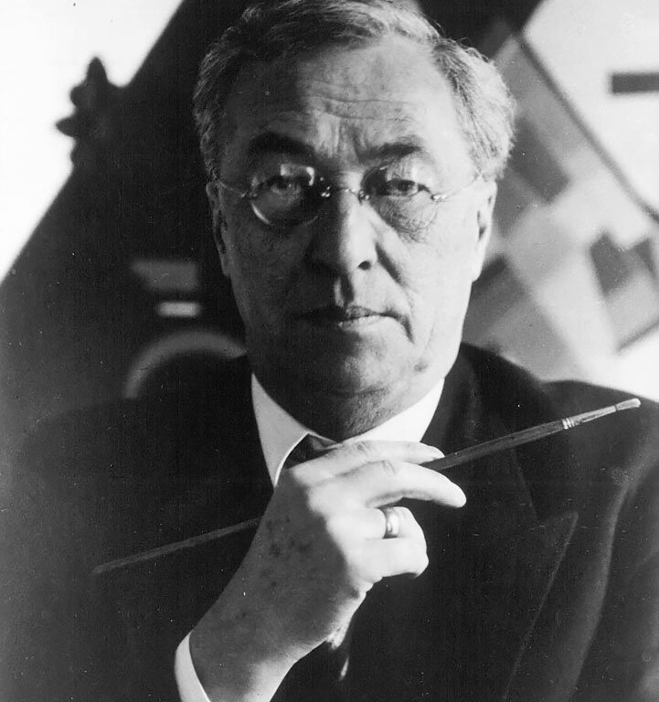

Дети Москвы

В детстве он мечтал стать композитором, сочинял и импровизировал на фортепиано. В юности хотел быть философом, брал уроки у немецкого неокантиста Германа Когена. Но судьба распорядилась иначе: Борис Пастернак стал писателем, и именно литература принесла ему в 1958 году Нобелевскую премию.
Пастернак был типичным коренным москвичом с абсолютно европейским взглядом на мир. А потому изучение летом 1912 года философии в Марбургском университете в Германии, переписка с Рильке и переводы трагедий Шекспира, «Фауста» Гете и «Марии Стюарт» Шиллера — лишь логическое развитие этой его двойственности. Так что публикация на Западе романа «Доктор Живаго» и выдвижение Альбером Камю в 1958 году его кандидатуры на соискание Нобелевской премии выглядят как ожидаемое развитие жизненного сюжета. Но, несмотря на ярость властей и запрет на издание, он до своей смерти сохранил верность Москве и умер в Переделкине всего через два года после публикации своего главного романа.

Фёдор Михайлович Достоевский (1821–1881 гг.) – величайший писатель, классик русской литературы, мыслитель. Автор таких бессмертных произведений, как «Идиот», «Преступление и наказание», «Униженные и оскорблённые», «Братья Карамазовы» и многих других.
Он родился 11 ноября 1821 года в Москве, в семье потомственного дворянина и штаб-лекаря Михаила Андреевича Достоевского. Помимо Фёдора в семье было ещё шестеро детей. Мать писателя, Мария Фёдоровна, умерла, когда ему было 16 лет. Сразу после этого события, Фёдор, вместе со своим старшим братом Михаилом, уехал в Петербург поступать в Главное инженерное училище. Через два года пришло известие об убийстве их отца крепостными. На тот момент Достоевский работал в кружке Белинского.
В 1843 году писатель впервые перевёл и издал роман Оноре де Бальзака – «Евгения Гранде». А через год вышло в свет его первое произведение «Бедные люди», после чего он сразу прославился.
В 1859 году он переезжает жить в Петербург, интенсивно работает как над собственными статьями, так и над чужими рукописями. В свет выходит роман «Униженные и оскорблённые». В 1862 году писатель уезжает за границу, посещает Францию, Германию, Англию и другие европейские страны.
В 1866 году истекает контракт с издательством, что вынуждает Достоевского работать сразу над двумя романами: «Игрок» и «Преступление и наказание». Популярность писателя особенно возрастает в последние годы его жизни. Он становится членом-корреспондентом Академии Наук. В 1878 году, после потери любимого сына Алексея, начинает работать над своим итоговым произведением – «Братья Карамазовы». Умер Фёдор Достоевский 9 февраля 1881 года, в возрасте 59 лет, и был похоронен на Тихвинском кладбище в Петербурге

Агния Львовна Барто родилась 4 (17) февраля 1906 г., в Москве, в интеллигентной семье. Начальное образование будущий литератор получила на дому. Затем ее отдали на обучение в гимназию. Одновременно юная Агния посещала хореографическое училище. Первые стихи "родились” примерно в это же время.
Первые стихи для детей были опубликованы в 1925 г. Стихотворения "Мишка-воришка” и "Китайчонок Ван Ли” сегодня проходят в 3 классе. Выйдя замуж за поэта П. Барто, она в соавторстве с ним написала такие стихотворения, как "Считалочка”, "Девочка чумазая” и "Девочка-ревушка”. Сборник "Стихи детям” вышел в 1949 г. Сборник "За цветами в зимний лес” – в 1970 г. В 1976 г. вышла книга "Записки детского поэта”.
Изучая биографию Агнии Барто, следует знать, что были в ее жизни и темные пятна. Детский поэт была ярым сторонником советской власти и обрушивалась с беспощадной критикой на всех тех, кто, по ее мнению, выступал против нее.
В 1930 г. в "Литературной газете” появилось письмо, подписанное А. Барто. В этом письме автор выступал против другого известного детского писателя, К. И. Чуковского. В детских сказках Чуковского была усмотрена "антисоветчина”.
В 1974 г. по настоянию А. Барто из Союза писателей была исключена дочь К. Чуковского, Л. Чуковская. Вплоть до 1987 г. на ее публикации в Советском Союзе был наложен запрет.
Агния Барто ушла из жизни 1 апреля 1981 г. Ее похоронили в Москве, на Новодевичьем кладбище.

Владимир Высоцкий родился 25 января 1938 года в Москве в семье военного. Раннее детство будущего поэта прошло в тесной коммунальной квартире. В 1941–1943 годах, во время Великой Отечественной войны, Владимир с матерью находились в Оренбургской области в эвакуации. С 1947 года Высоцкий живет у отца в Германии. В конце 1949 году возвращается в Москву.
В 1953 году Высоцкий становится участником драмкружка, под руководством артиста МХАТа В. Богомолова. В этом же году поэт создает свое первое стихотворение – «Моя клятва». В 1955 году Владимир Семенович оканчивает школу и поступает в Инженерно-строительный институт в Москве. Через полгода он бросает институт, решив поступить в театральный. В 1956 году Высоцкийпоступает на актерское отделение Школы-студии МХАТ. В 1959 году Владимир Семенович дебютировал в театральной постановке (Порфирий Петрович в «Преступлении и наказании») и киноленте (фильм «Сплетницы»).
Окончив обучение, с 1960 года Владимир Семенович работает в Драматическом театре им. Пушкина в Москве. В 1961 году Высоцкий пишет свою первую песню – «Татуировка». Немного проработав в Театре миниатюр, Владимир Семенович устраивается в Театр драмы и комедии на Таганке. В 1968 году выходит первая пластинка музыканта – «Песни из кинофильма «Вертикаль». В 1970 году в личной жизни Высоцкого произошло важное событие – поэт женился на актрисе Марине Влади, ставшей его третьей женой и музой. Осенью 1971 года в театре на Таганке Владимир Семенович дебютировал со своей известнейшей ролью – принца Гамлета из одноименной трагедии Шекспира.
В феврале 1978 года Высоцкому присвоили высшую категория вокалиста-солиста эстрады.
18 июля 1980 года Высоцкий последний раз сыграл роль Гамлета. Через неделю, 25 июля 1980 года Высоцкий умер от сердечной недостаточности. Похоронили поэта на Ваганьковском кладбище в Москве.

Константин Сергеевич Станиславский (1863-1938) – режиссер, актер, педагог, основоположник уникальной актерской системы, известной во всем мире. Является создателем знаменитого московского театра и Оперного театра-студии. Биография Станиславского Константина Сергеевича полна ярких событий, открытий и встреч с выдающимися людьми своего времени.
Константин Сергеевич появился на свет 17 (5) января 1863 года в столичном семействе Алексеевых, принадлежавшим династии крупных промышленников. Станиславский – это сценический псевдоним, которым он воспользовался в зрелые годы. В ту пору стало модным устраивать домашние любительские театры, и семейство Алексеевых не стало исключением. Для близких друзей и родственников они организовывали небольшие спектакли, в которых неизменно принимал участие маленький Костя.Он испытывал большое удовольствие во время выступлений, и родители поддерживали интересы сына. Впрочем, театр рассматривался ими только в качестве приятного увлечения. Повзрослев, Константин должен был возглавить дело отца и руководить крупной фабрикой.Так и случилось. По окончанию Лазаревского института юный Алексеев занимался отцовскими делами, развивал производство, заключал договора, однако не прекращал мечтать о театре.
В 1885 году Константин Сергеевич выбрал для себя псевдоним Станиславский, а спустя три года совместными усилиями с Ф. Комиссаржевским и Ф. Сологубом организовал Московское общество искусства и литературы – МОИиЛ. Станиславский не только профинансировал общество, но также лично разработал его устав. В течение десяти последующих лет Станиславскому удалось создать множество ярких и запоминающихся образов в постановках МОИиЛа. Его актерский талант был по достоинству оценен публикой и театральными критиками.
В 1898 году состоялась судьбоносная встреча Станиславского с театральным режиссером Немировичем-Данченко. В течение суток они обсуждали вопрос, который давно волновал их обоих – создание Московского художественного театра. Дебютом нового театра стала пьеса «Царь Федор Иоаннович», однако настоящим открытием в мире театрального искусства стала постановка чеховской «Чайки». В дальнейшем именно чайка стала символом МХАТа. Константин Сергеевич все свои силы направил на созданный им театр. Помимо режиссуры, но занялся разработкой собственной системы, согласно которой актер не должен передавать чужие переживания. Важнейшая задача любого артиста – полностью погружаться во внутренний мир своего персонажа.
В 1928 году во время выступления в театре Станиславского настиг сердечный приступ. В течение десяти лет он отчаянно боролся с недугом, продолжая творить, невзирая на сильные боли. Константин Сергеевич ушел из жизни 7 августа 1938 года.

16 декабря 1866 года родился Василий Кандинский — художник, теоретик искусства, основоположник абстракционизма, человек, перевернувший привычные представления о живописи, который вписал свое имя в мировую историю искусства. Его картины находятся в музеях по всему миру, а его творческое наследие стоит на аукционах миллионы долларов…
Он родился в Москве в семье купца. Вместе с семьей он в 1871 году переезжает в Одессу. В городе он посещал классическую гимназию и занимался с учителем по рисованию, которого приглашали на дом.
Василий Кандинский в 1885 году поступает в Московский университет на факультет юрисдикции. Успешно закончив его, Василий даже начал писать диссертацию. Но так и не закончил ее. Кандинский решил стать художником.
Он в 1896 году уехал в Мюнхен, чтобы посещать художественную школу А. Ашбе. Здесь он научился строить композиции и работать с формами, линией. Также художник слушал курсы анатомии, и каждый день рисовал натурные этюды. Позже Кандинский поступает в академию художеств Штука. В 1901 году в Мюнхене он основал художественное объединение под названием «Фаланга». За 4 года в пребывании в городе, Кандинский организовал 12 выставок. А в 1909 году художник возглавил Новое художественное общество.
В 1911 году Кандинский написал книгу «О духовном в искусстве», которая перевернула устоявшиеся представления об искусстве. Книга была первым теоретическим справочником абстракционизма. Также в этом году было организовано им объединение «Синий всадник». Цель объединения – пропаганда новых идей в театре, живописи и музыке. Параллельно с этим в Берлине прошла персональная выставка работ Кандинского с 64 художественных композиций.Также он, живя за границей, активно сотрудничал с русскими художниками — К. С. Малевичем, Д. Д. Бурлюком, М. Ф. Ларионовым, Н. С. Гончаровой. Помогал им организовывать и участвовать в разнообразных выставках.
В 1915 году художник возвращается в Москву. После Октябрьской революции Кандинский занимался преподавательской и музейной деятельностью, вошел в 1918 году в коллегию Отдела ИЗО Нар-компроса. Он организовал в Петрограде Музей живописной культуры в 1919 году и возглавил в 1919-1921 годах Всероссийскую закупочную комиссию.
В 1921 году его делегировали в Германию в качестве представителя Академии художественных наук, чтобы установить постоянные связи между лицами и учреждениями художественного значения. Спустя год Василия пригласили в высшую школу художественного строительства и конструирования в Германии. Это сделало его имя известным на весь мир. Художника назвали теоретиком абстрактного искусства. Каждый год проходили персональные выставки в Америке и Европе. В 1926 году была издана его книга «Точка и линия на плоскости».
В 1933 году Кандинский переехал во Францию. С приходом нацистов к власти, много работ художника были уничтожены. Умер великий художник 13 декабря 1944 года.